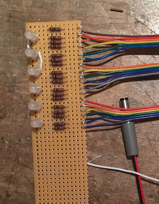
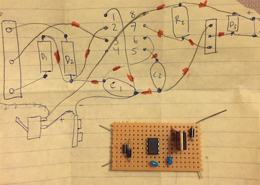
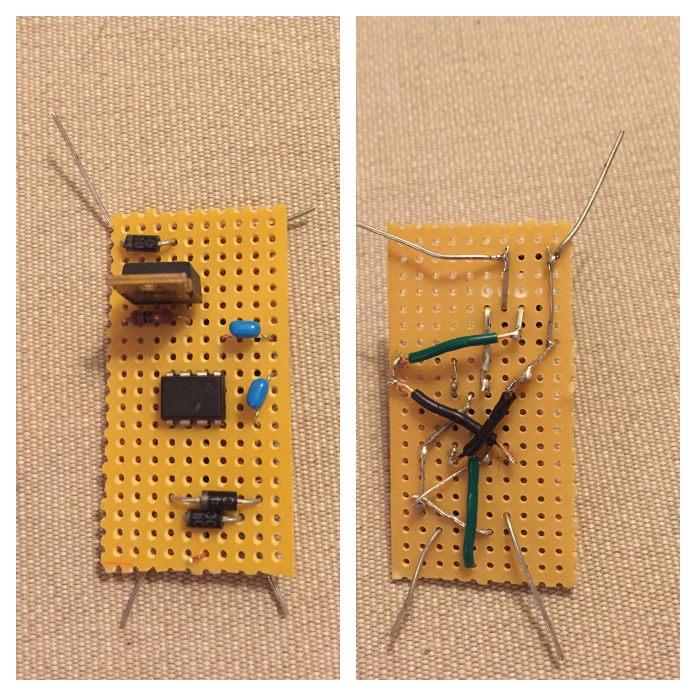

Toggle navigation
Sylvia Naples
Pictures of Math
OpenCV Projects
Arduino Projects
Hackathon Projects
My First Electronics/Arduino Project
An implementation of Persistence of Vision from Simon Monk's
15 Dangerously Mad Projects for the Evil Genius
Progress Photos
Three pin RBG leds with connected resistors

The instructions were written for a Printed Circuit Board. Since I was using a strip of plastic with holes in it, I had to work out the diagram myself.

Completed front and back of the motor controller
